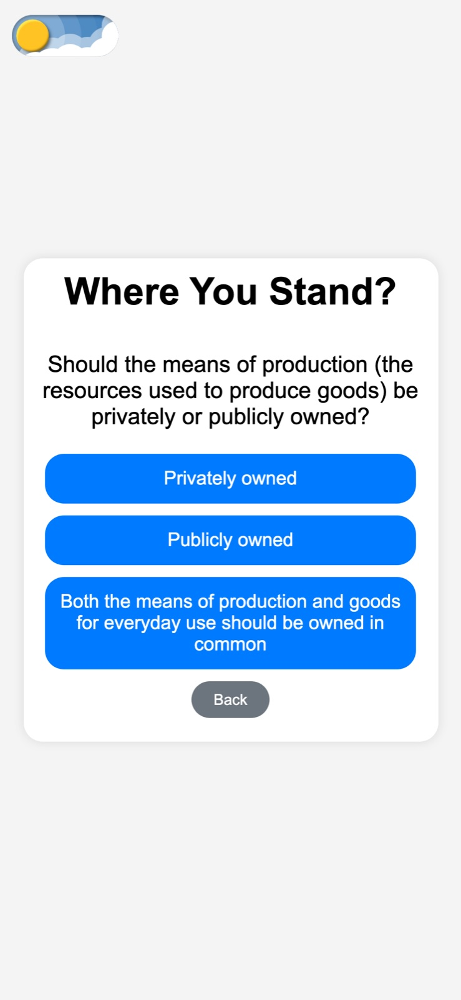
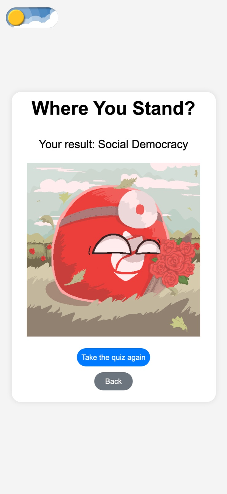
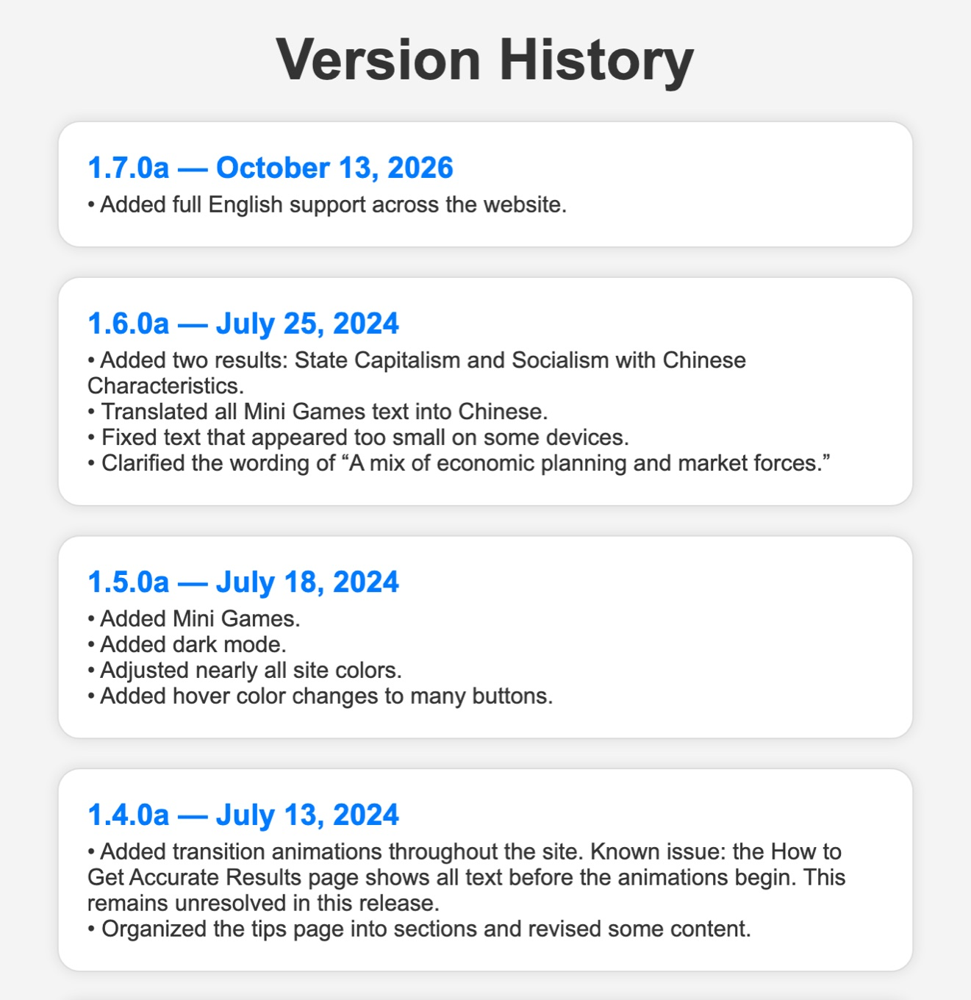
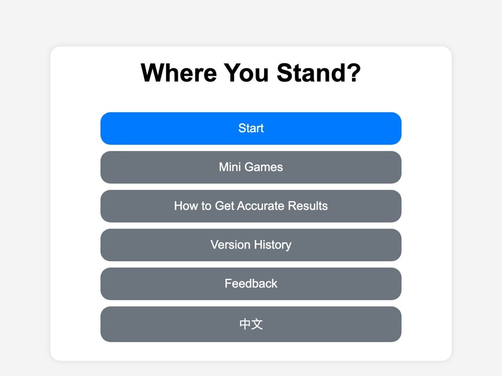
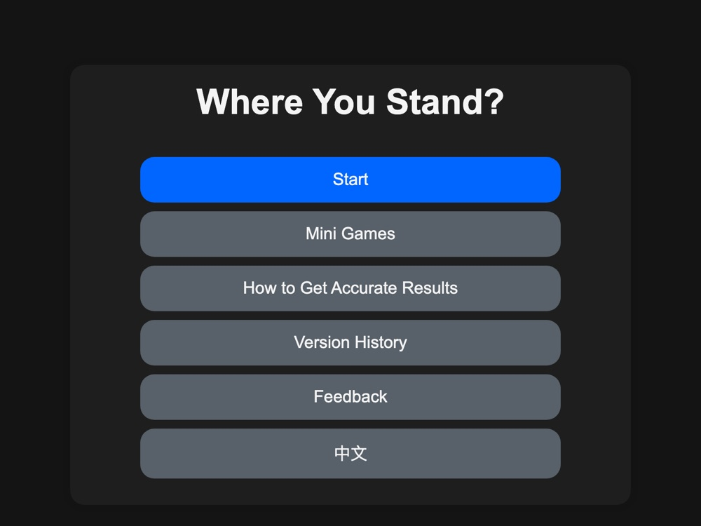

Thinking Map
A political ideology quiz I built with HTML, CSS, and JavaScript. Each answer decides the next question, and every route ends at one of 105 ideologies.
Pictured: the whole decision tree as I mapped it in XMind. Click it to open the full map and read every question.




